Бионика
Что такое бионика?
Бионика — наука, использующая биологические системы и принципы для создания технологий. От крыла самолёта до застёжки-липучки — природа вдохновляет инженеров. Она объединяет биологию, физику, химию и инженерию для решения сложнейших задач человечества.
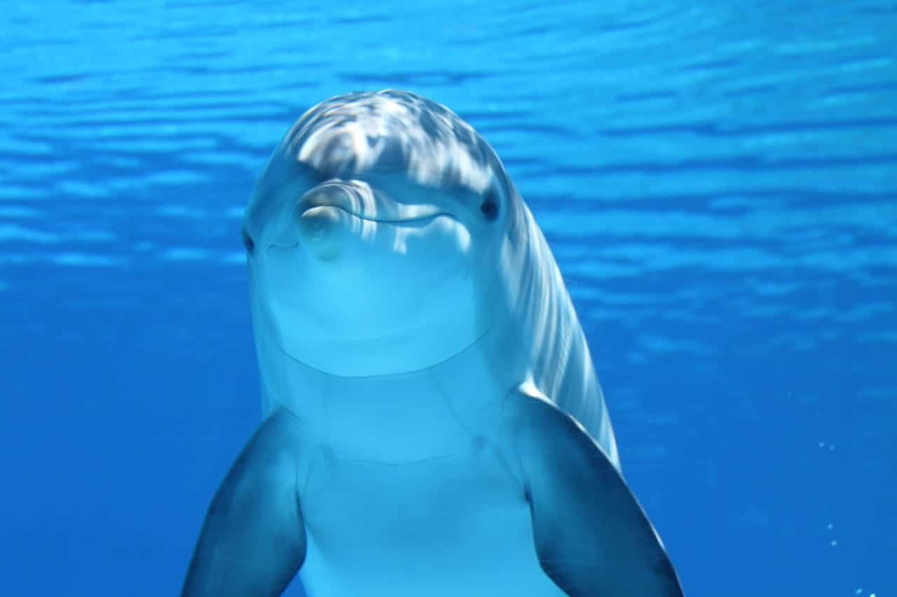
Добавьте фото: photos/dolphin.jpg
'">Гидродинамика
Форма дельфинов и акул уменьшает сопротивление воды при движении.
💡 Коэффициент лобового сопротивления дельфина — 0.0036, что в 10 раз меньше, чем у торпеды.
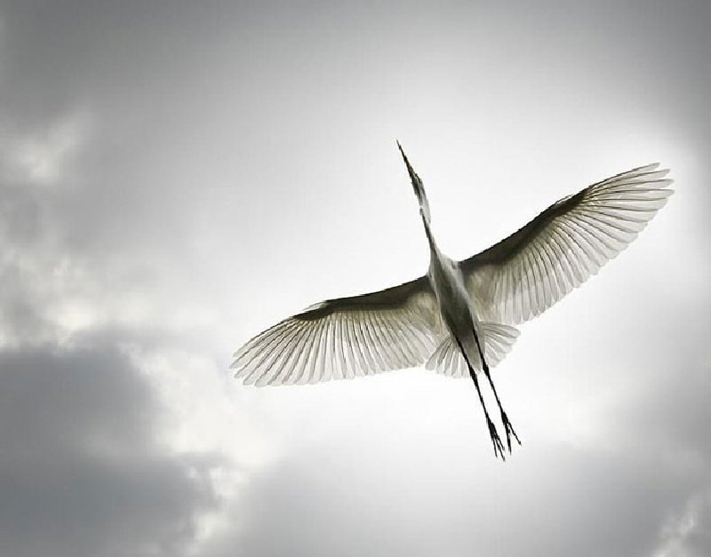
Добавьте фото: photos/bird-flight.jpg
'">Полёт птиц
Крыло самолёта имитирует изгиб птичьего крыла для создания подъёмной силы.
✈️ Изогнутый профиль крыла создаёт разницу давления: сверху скорость воздуха выше, давление ниже.
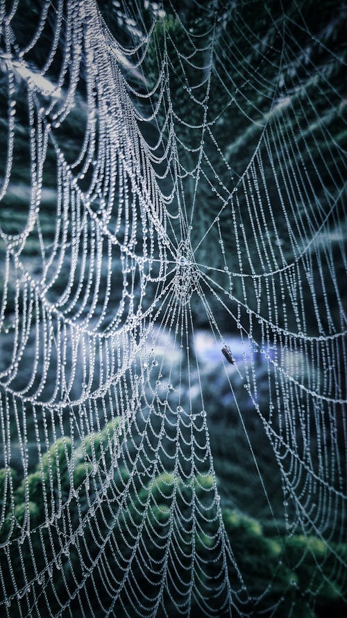
Добавьте фото: photos/spider-web.jpg
'">Паутина
Прочнее стали при той же толщине. Вдохновляет создание сверхпрочных волокон.
🕸️ Паучий шёлк в 5 раз прочнее стали и может растягиваться на 30% без разрыва.
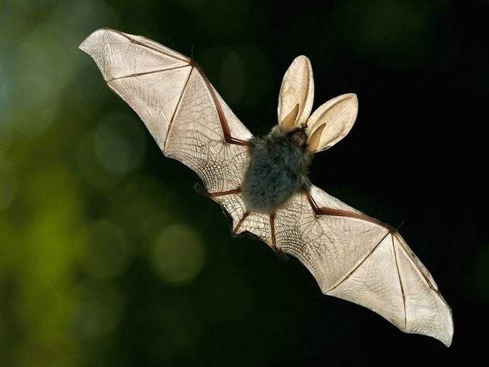
Добавьте фото: photos/bat.jpg
'">Эхолокация
Летучие мыши и дельфины используют ультразвук для ориентации в пространстве.
🦇 Частота сигналов летучих мышей достигает 200 кГц, что вдохновило создание сонаров.
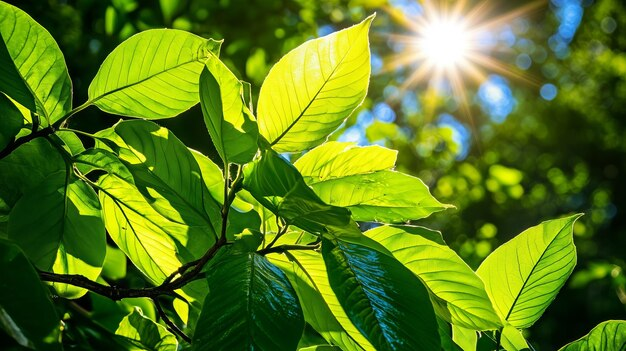
Добавьте фото: photos/leaf-sun.jpg
'">Фотосинтез
Растения преобразуют солнечный свет в энергию с эффективностью до 6%.
🌿 Искусственные листья имитируют фотосинтез для производства водорода как топлива.
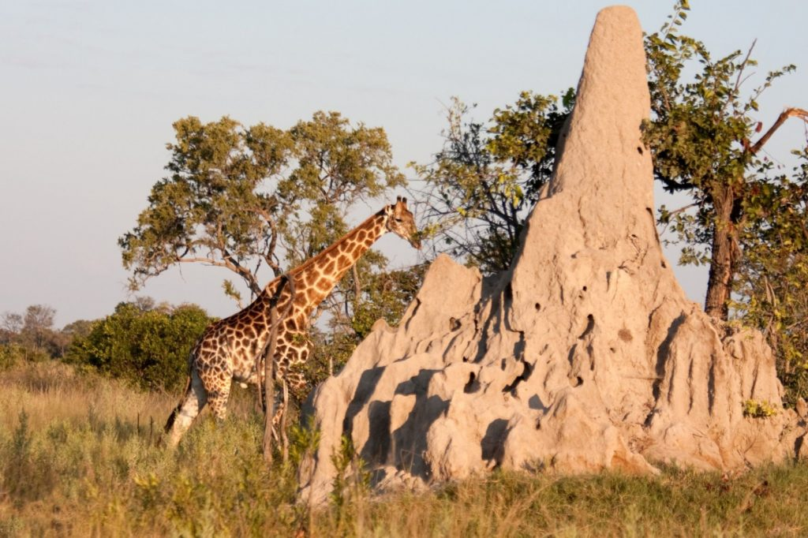
Добавьте фото: photos/termite-mound.jpg
'">Терморегуляция
Термитники поддерживают постоянную температуру внутри в жарком климате.
🏠 Здание Eastgate в Зимбабве использует пассивное охлаждение по принципу термитника.
Природные явления в бионике
Изучите удивительные природные феномены, которые вдохновляют учёных и инженеров на создание инновационных технологий.
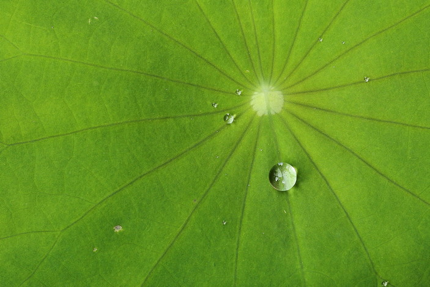
Добавьте фото: photos/lotus-leaf.jpg
'">Эффект лотоса
Листья лотоса обладают способностью отталкивать воду и грязь. Капли скатываются, захватывая частицы пыли, благодаря чему лист всегда остаётся чистым.
Научное объяснение
- Микроструктура: восковые кристаллы размером 5-10 мкм
- Угол смачивания: до 170° (супергидрофобность)
- Самоочищение: вода собирается в сферы и уносит загрязнения
- Применение: краски, стёкла, ткани, фасады зданий
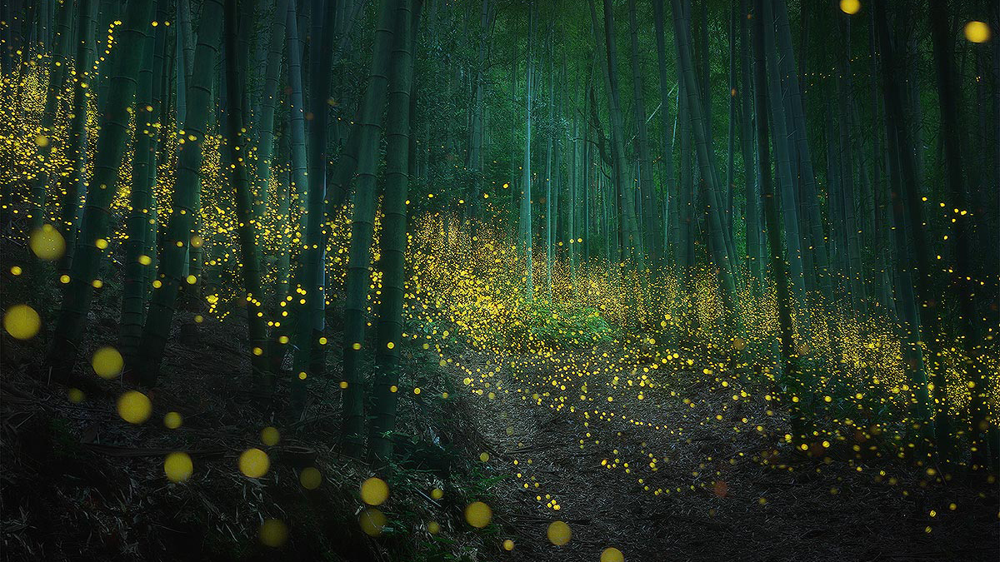
Добавьте фото: photos/bioluminescence.jpg
'">Биолюминесценция
Способность живых организмов излучать свет. Светлячки, глубоководные рыбы и некоторые грибы излучают холодный свет без выделения тепла.
Научное объяснение
- Реакция: люцифераза окисляет люциферин
- КПД: почти 100% энергии превращается в свет
- Применение: биосенсоры, медицинская диагностика
- Пример: проект Glowing Plants — светящиеся растения
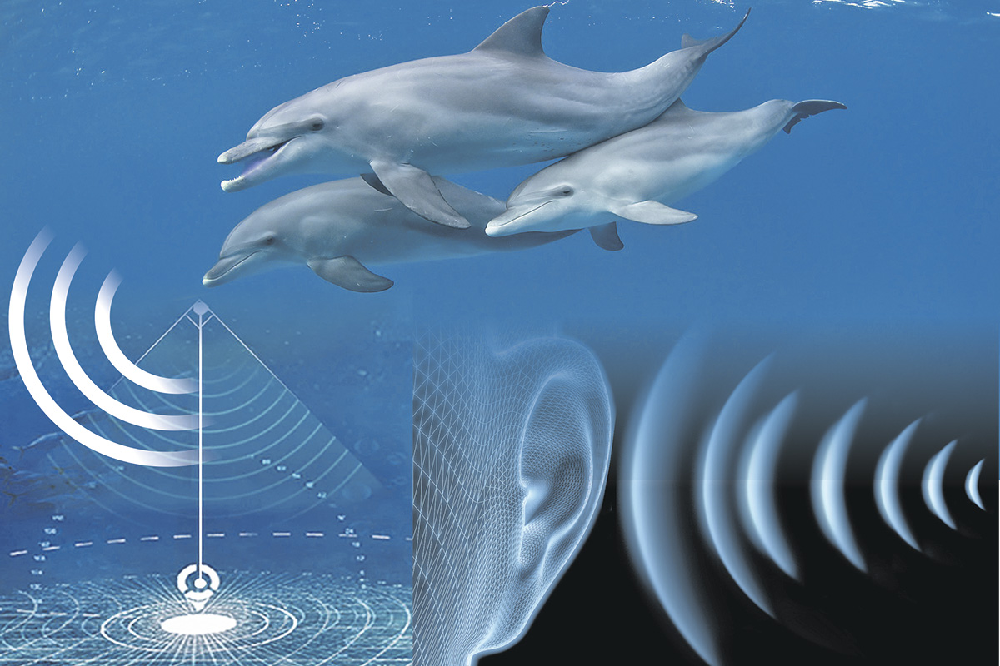
Добавьте фото: photos/dolphin-echolocation.jpg
'">Эхолокация
Летучие мыши и дельфины излучают звуковые волны и анализируют их отражение для ориентации в пространстве и охоты в полной темноте.
Научное объяснение
- Частота: ультразвук от 20 до 200 кГц
- Точность: дельфин различает предметы на 100 м
- Применение: гидролокаторы, сонары, парковочные радары
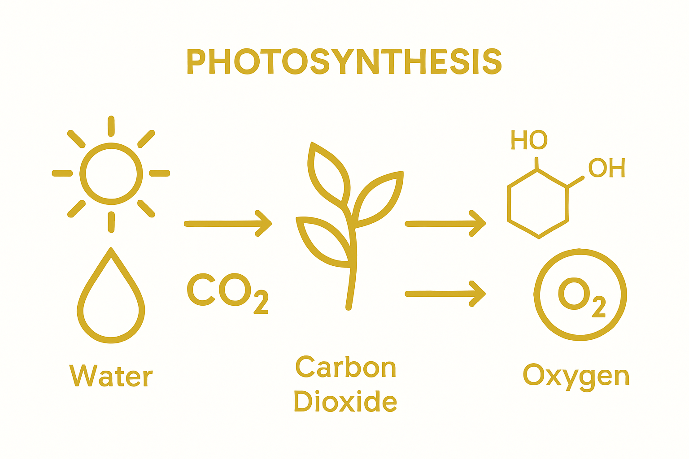
Добавьте фото: photos/photosynthesis.jpg
'">Фотосинтез
Растения преобразуют солнечный свет, воду и углекислый газ в органические вещества и кислород — основа жизни на Земле и образец энергоэффективности.
Научное объяснение
- Хлорофилл: поглощает красный и синий свет
- Эффективность: до 6% солнечной энергии
- Применение: искусственный фотосинтез для водородного топлива
Бионические изобретения
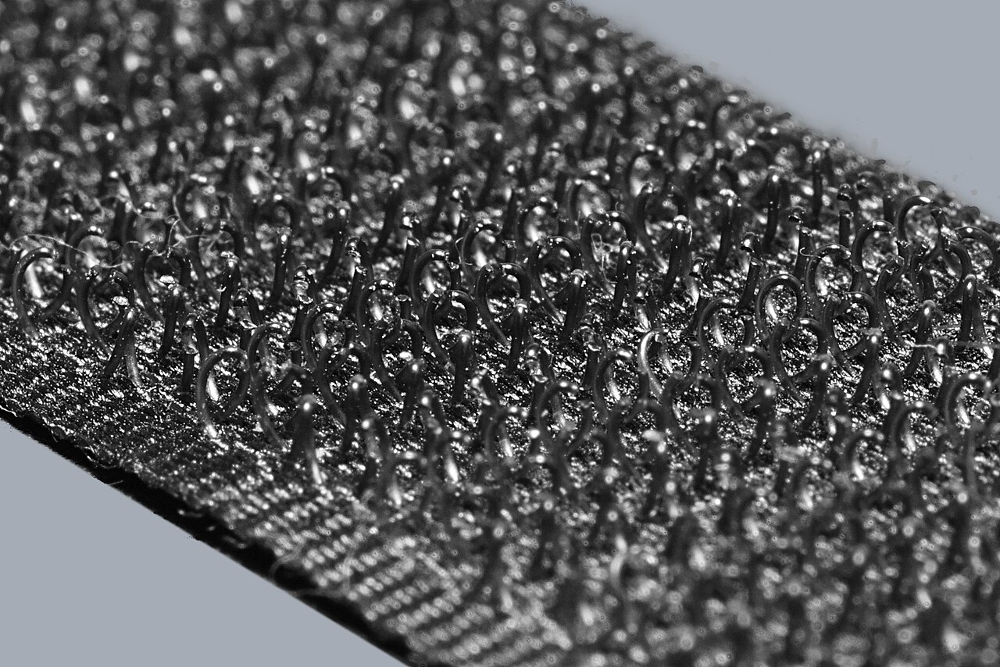
Добавьте фото: photos/velcro.jpg
'">Липучка Velcro
Вдохновлена микрокрючками репейника. Швейцарский инженер Жорж де Местраль создал застёжку в 1941 году.

Поезд Синкансэн
Нос поезда повторяет форму клюва зимородка — это снижает шум и улучшает аэродинамику.
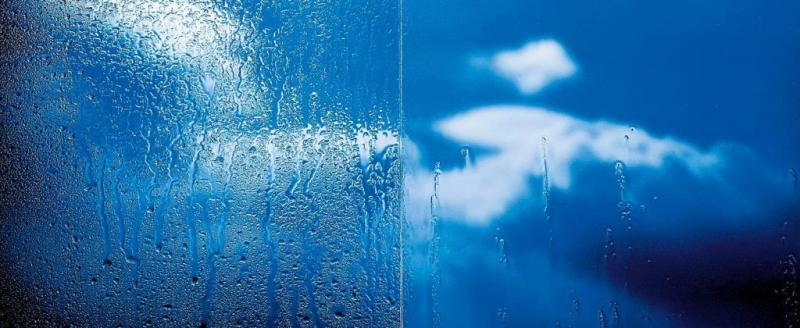
Добавьте фото: photos/lotus-glass.jpg
'">Эффект лотоса
Самоочищающиеся поверхности на основе микроструктуры листа лотоса используются в красках и стёклах.
Интерактивная демонстрация: Эффект лотоса
Передвигайте каплю воды по гидрофобной поверхности листа лотоса
Микрорельеф листа лотоса создаёт угол смачивания более 150°, заставляя воду собираться в идеальные сферы и скатываться, унося загрязнения.